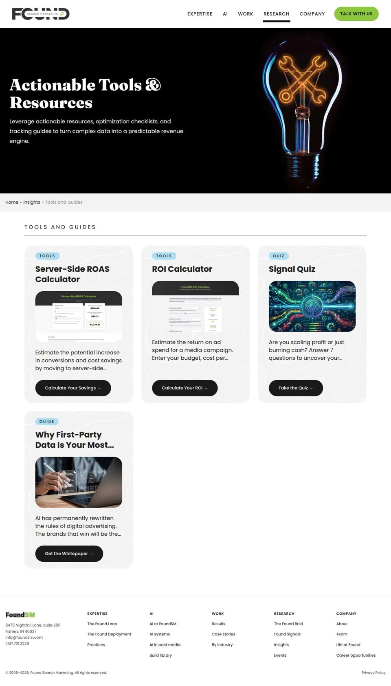
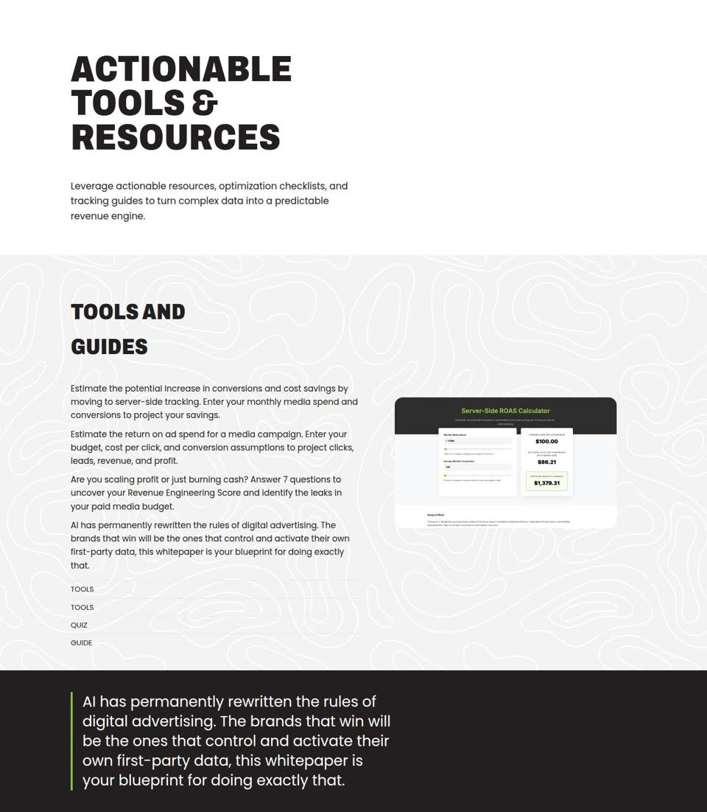
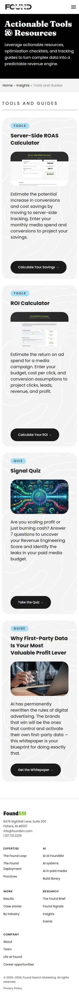
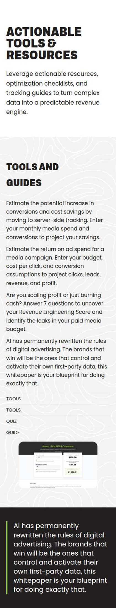

Research · small




kept, reworded (em dash replaced with a comma)
Before: AI has permanently rewritten the rules of digital advertising. The brands that win will be the ones that control and activate their own first-party data — this whitepaper is your blueprint for doing exactly that.
After: AI has permanently rewritten the rules of digital advertising. The brands that win will be the ones that control and activate their own first-party data, this whitepaper is your blueprint for doing exactly that.
36 of 36 items kept. Reworded items are still on the page. Open the list to see each one.